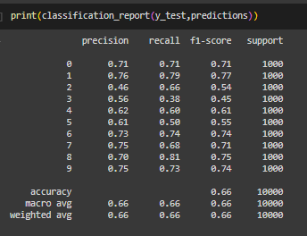

Discussion 1
Technology has become an integral part of our lives, and the rapid adoption of technology is expected to continue or even accelerate (Schwab & Zahidi, 2020). Our dependence on technology means that unforeseen errors or failures in technology can have major repercussions.
An example of this was seen with a signal failure in Kowloon which caused major delays for up to 4 hours while officials were unaware (Chi-fai, 2004). Discussing the incident with my peers, a common theme was the importance of proper oversight for technology and procedures in place for when technology fails to work as expected. Having humans involved in crucial processes to work alongside technology can maximize the performance by leveraging both the speed and efficiency of automation and the creativity and problem solving skills of a human during unique or unforeseen situations (Noble et at. 2022). This could have led to a swift resolution to the signal failure and allowed traffic to flow during rush hour, so that the technology failure could be addressed in a less busy time.
The security of iot devices was also discussed, as they are often susceptible to cyber threats (Baldini et. Al, 2017). There are a wide range of sensors used in transportation to control rail signals, count the number of passengers on board, or measure the crowding at a station. Designing these systems to minimize the amount of personal data being processed, for example using infrared sensors to count boardings instead of cameras to identify passengers and track their movements, can help to improve some of the privacy concerns around these technologies. Ensuring proper cybersecurity protocols are in place is important in protecting this data.
References
Baldini, G., Botterman, M., Neisse, R., & Tallacchini, M. (2016). Ethical design in the internet of things. Science and Engineering Ethics, 24(3), 905–925. Available From https://doi.org/10.1007/s11948-016-9754-5
Chi-fai, C. (2004). "Outrage at rush-hour rail chaos; West Rail signal failure delays 10,000, but authorities only hear about it from radio broadcasts". South China Morning Post. Available From advance.lexis.com/api/document?collection=news&id=urn:contentItem:4D44-BH60-0002-P131-00000-00&context=1519360
Noble, S., Mende, M., Grewal, D. & Parasuraman, A. (2022) The fifth Industrial Revolution: How harmonious Human-Machine Collaboration is Triggering a Retain and Service [R]evolution. Journal of Retailing 28(2): 199-208 Available From: https://doi.org/10.1016/j.jretai.2022.04.003
Schwab, K. & Zahidi, S. (2020) The Future of Jobs Report. World Economic Forum. Available from: https://www3.weforum.org/docs/WEF_Future_of_Jobs_2020.pdf
Seminar 2
In preparation for this seminar, our task was to perform exploratory data analysis (EDA) with the Auto-mpg dataset. Importing the required libraries and printing the first 5 rows of the datasets indicate that we expect the car name to be text, with the other columns being numeric.
import pandas as pd
import numpy as np
import matplotlib as mpl
import matplotlib.pyplot as plt
%matplotlib inline
import seaborn as sns
import scipy.stats as st
from sklearn import ensemble, tree, linear_model
import missingno as msno
df.head()
Checking the datatypes for each column we can see that horsepower is saved as a text field. Printing distinct values showed that instead of using nan values, ‘?’ was used in cases the horsepower was unknown. ‘?’ was then replaced with null values so that horsepower could be converted to a numeric column. This leaves 6 rows where horsepower is null as the only null values in the dataframe. The skew for all columns is less than 3 and the kurtosis is less than 6, this indicates to us that the columns are all symmetrical and don’t have heavy tails (DeCarlo, 1997).
df.skew(), df.kurt()
Generating a heatmap for this data shows that weight, horsepower, displacement, and cylinders have strong correlation with each other, while those four columns all also show a strong negative correlation with the origin, model year, and acceleration.
f , ax = plt.subplots(figsize = (14,12))
plt.title('Correlation of Numeric Features',y=1,size=16)
sns.heatmap(df.corr())
A new column ‘car name code’ is added which converts the car name column to a numeric value.
df['car_name_code'] = df['car name'].astype('category').cat.codesFinally a pairplot is produced to visualize the relations between each variable. The correlations above are easily visible in the pairplot, while also showing the relationship between car name and origin.
sns.set()
sns.pairplot(df,height = 2 ,kind ='scatter',diag_kind='kde')
plt.show()
This exercise was helpful in providing an opportunity to apply the concepts we have learned in the early weeks of the course, and understanding the EDA process will be useful in understanding how to approach a new dataset in the future.
View the final code hereReferences
DeCarlo, L. T. (1997) On the Meaning and Use of Kurtosis. Psychological methods. [Online] 2 (3), 292–307. Available From https://web-s-ebscohost-com.uniessexlib.idm.oclc.org/ehost/pdfviewer/pdfviewer?vid=0&sid=51b16d11-8f19-40e6-a38e-993423b297d6%40redis
Jaccard Coefficient
This activity is to calculate the jaccard coefficient for each pair given the table below.
Name Gender Fever Cough Test-1 Test-2 Test-3 Test-4 Jack M Y N P N N A Mary F Y N P A P N Jim M Y P N N N A
The Jaccard coefficient is equal to the sum of columns where either one person or the other tested positive but not both, divided by the sum of columns where one person or the other or both tested positive. Columns where both tested negative are not included.
To set this table up for jaccard coefficient calculations, we replace positive values Y and P with 1, while negative values N and A are replaced with 0. Gender is omitted as it is not a positive or negative value.
Name Fever Cough Test-1 Test-2 Test-3 Test-4 Jack 1 0 1 0 0 0 Mary 1 0 1 0 1 0 Jim 1 1 0 0 0 0
Jack and Mary: Jack did not test positive for anything that Mary did not, and Mary only tested positive for fever where Jack tested negative. This gives a numerator of 1. They both tested positive for fever and test1, giving a denominator of 2 + 1 = 3. Therefore, the Jaccard coefficient is 1/3
Jack and Jim: Jack tested positive for test1 where Jim tested negative, and Jim tested positive for cough where Jack tested negative. This gives a numerator of 2. They both tested positive for fever, giving a denominator of 2 + 1 = 3. Therefore, the jaccard coefficient is 2/3
Mary and Jim: Mary tested positive for test1 and test3 where Jim tested negative, while Jim tested positive for cough where Mary tested negative. This gives a numerator of 3. They both tested positive for fever, giving a numerator of 3 + 1 = 4. Therefore, the jaccard coefficient is 3/4
K-Means
The first kmeans visual shows a distribution of data points and how the algorithm is affected by the starting point. Starting with the four points furthest left for the first run, furthest top for the second, furthest right for the fourth, and furthest bottom for the fourth. Only one of these gave the result of the 4 clusters that I had expected to see looking at the data points before the algorithm ran. This showed that picking the extremes as starting points can affect how the clusters are formed, as sometimes they would end up with small clusters preventing a centroid from moving closer to where it would give the most accurate match. The final run uses random starting points and does end up with the expected clusters, as the starting points are not at the extremes of the data set.
For the second kmeans visual we were to choose our own points for a uniform distribution of data. Regardless how many clusters I chose to have or where I picked to initialize them, I always finished with the same equal clusters. This highlighted the effect that the dataset has on an algorithm, and that for the uniform dataset the starting points were not important as it always came to the same result.
Seminar 4
In preparation for the third seminar, we were given tasks that involved performing k-means clustering on a given dataset.
Task A was to perform k-means clustering on the iris dataset (Fisher, 1988) using k=3, and evaluate the models performance. The dataset was imported directly from the UCI repo where it is stored, and split into targets and features as described in their import guide.
from ucimlrepo import fetch_ucirepo
import random
import numpy as np
import matplotlib.pyplot as plt
from sklearn.cluster import KMeans
from sklearn.preprocessing import StandardScaler
import pandas as pd
%matplotlib inline
# fetch dataset
iris = fetch_ucirepo(id=53)
# data (as pandas dataframes)
X = iris.data.features
y = iris.data.targets
# metadata
print(iris.metadata)
# variable information
print(iris.variables)There are no null values in the dataset, and since it is already split into features and a target there was no need to drop any columns as reccommended in the assignment. The dataset was then normalized in preparation for clustering.
Clus_dataSet = StandardScaler().fit_transform(X)k-means clustering can now be performed and datapoints assigned to a cluster.
clusterNum = 3
k_means = KMeans(init = "k-means++", n_clusters = clusterNum, n_init = 12)
k_means.fit(X)
labels = k_means.labels_To measure the performance of the clustering we compare the cluster labels to the corresponding class.
Finaldf = y
Finaldf['cluster'] = labels
for item in pd.unique(y['class']):
tempdf = Finaldf[Finaldf['class'] == item]
print( item + 'Predicted 0 = ' + str(len(tempdf[tempdf['cluster'] == 0])))
print( item + 'Predicted 1 = ' + str(len(tempdf[tempdf['cluster'] == 1])))
print( item + 'Predicted 2 = ' + str(len(tempdf[tempdf['cluster'] == 2])))
We can see that all Iris-setosa were predicted to be in class 0. Iris-versicolor had 48 predicted in class 1 and 2 predicted in class 2, giving a 96% accuracy. Iris-virginica had 36 predicted in class 2 and 14 predicted in class 1, giving a 72% accuracy. This clustering model was effective for classifying Iris-setosa, while it occasionaly miscategorized Iris-versicolor and often miscategorized Iris-virginica.
Task B was to perform k-means clustering on the wine dataset (Aeberhard & Forina, 1991) using k=3, and evaluate the models performance. The dataset was imported directly from the UCI repo where it is stored, and split into targets and features as described in their import guide.
The same import steps were followed as in task A, and the dataset was already split into numeric features and a target, so there were no columns to drop. There are also no null values in the dataset. After the data is normalized, clustering is performed with k=3
clusterNum = 3
k_means = KMeans(init = "k-means++", n_clusters = clusterNum, n_init = 12)
k_means.fit(X)
labels = k_means.labels_To evaluate the models performance, we look at the number of times each target class was predicted for each cluster
Finaldf = y
Finaldf['cluster'] = labels
for item in pd.unique(y['class']):
tempdf = Finaldf[Finaldf['class'] == item]
print('Class' + str(item) + ' Predicted 0 = ' + str(len(tempdf[tempdf['cluster'] == 0])))
print('Class' + str(item) + ' Predicted 1 = ' + str(len(tempdf[tempdf['cluster'] == 1])))
print('Class' + str(item) + ' Predicted 2 = ' + str(len(tempdf[tempdf['cluster'] == 2])))
Target class 1 was predicted for cluster 0 46 times and cluster 2 13 times, giving an accuracy of 78%. Target class 2 was predicted for cluster 0 once, cluster 1 50 times, and cluster 2 20 times, giving an accuracy of 70%. Target class 3 was predicted for cluster 1 19 times, and cluster 2 29 times, giving an accuracy of 60%
Using clustering on the wine dataset gave much lower performance compared to the iris dataset, likely indicating that the different clusters are not as clearly defined by their characteristics when compared to the iris dataset.
View the final code hereReferences
Fisher,R. A.. (1988). Iris. UCI Machine Learning Repository. https://doi.org/10.24432/C56C76.
Aeberhard,Stefan and Forina,M.. (1991). Wine. UCI Machine Learning Repository. https://doi.org/10.24432/C5PC7J.
Assignment 1
The task in this assignment was to carry out EDA and perform unsupervised learning on the Airbnb dataset. My focus in this assignment was in performing EDA, and organizing the google colab space so that the team could collaborate on the assignment. My first involvement was doing initial exploration on the dataset such as getting the feature types and null values. I then calculated skew and kurtosis then explaining our high skew and kurtosis in certain columns indicated a lack of symmetry and a heavy tail and peakedness relative to the normal distribution in these columns (DeCarlo, 1996).
After another group member added a correlation matrix to view correlation between numeric columns, I added codes for categoric data and generated then analyzed a pairplot so that we could see the relationship that each column had with each other.
Working on this project had many challenges due to the large group size and time difference between group members, but I still feel that I was able to apply the knowledge learned in the early weeks of this module to contribute to a thorough EDA of the dataset.
View the report or view the code here
References
DeCarlo, L. T. (1997) On the Meaning and Use of Kurtosis. Psychological methods. [Online] 2 (3), 292–307. Available From https://web-s-ebscohost-com.uniessexlib.idm.oclc.org/ehost/pdfviewer/pdfviewer?vid=0&sid=51b16d11-8f19-40e6-a38e-993423b297d6%40redis
Gradient Descent
In this activity we observe how modifying the number of iterations and learning rate from the sample code below impacts the cost.
# code credit:codebasics https://codebasics.io/coming-soon
import numpy as np
def gradient_descent(x,y):
m_curr = b_curr = 0
iterations = 300 #change value
n = len(x)
learning_rate = 0.08 #change value
for i in range(iterations):
y_predicted = m_curr * x + b_curr
cost = (1/n) * sum([val**2 for val in (y-y_predicted)])
md = -(2/n)*sum(x*(y-y_predicted))
bd = -(2/n)*sum(y-y_predicted)
m_curr = m_curr - learning_rate * md
b_curr = b_curr - learning_rate * bd
print ("m {}, b {}, cost {} iteration {}".format(m_curr,b_curr,cost, i))
x = np.array([1,2,3,4,5])
y = np.array([5,7,9,11,13])
gradient_descent(x,y)The default value for the learning rate is 0.08, and the cost continually decreases after each iteration. Increasing this value to 0.09 or greater changes how the cost behaves, as it starts to increase with every iteration instead of decreasing. The more it’s increased, the faster the cost continues to grow. There is also increasingly large slopes alternating between positive and negative. This represents the rate of change of the function (Mayo, 2017), meaning that the learning rate step size is too large to find the minima and will continually grow in cost as it’s overshooting it.
Decreasing the learning rate allows the cost to continue decreasing with each iteration, but it happens at a slower rate. To reach the same low levels of cost as before we need to increase the number of iterations, and will therefore take more time to reach the minima. Increasing the number of iterations too much made changes in the cost irrelevant for each iteration, as the difference was so small. This is a sign that we are already at a minima. On the contrary, lowering the number of iterations too much resulted in the cost function not getting nearly as low. Finding the correct balance or setting the iterations to quit early once a certain cost is reached could help to ensure that you are close enough to the minima without repeating unnecessarily.
References
Mayo, M. (2017). Neural Network Foundations, Explained: Updating Weights with Gradient Descent & Backpropagation. Available From: https://www.kdnuggets.com/2017/10/neural-network-foundations-explained-gradient-descent.html
Discussion 2
The popularity of AI tools such as Chat GPT has skyrocketed in recent years. It is easily accessible to most people and can be applied to a wide range tasks, creating potential use-cases in almost any industry.
These tools can be useful in terms of increasing efficiency and reducing the manual workload involved in simple tasks such as creating a schedule or drafting a template for an email. Due to the diversity of training data it is also useful at providing insights on a wide range of topics that may prove useful in the task at hand (Zimmerman, 2023). It can also be useful to support the scientific writing process through brainstorming and experimental design (Ingley & Pack, 2023).
While there is a large range of benefits, the discussions with my classmates focused more on the risks involved in using this technology incorrectly. Reliability of the answers provided is questioned due to the uncertainty on how information is gathered or where it came from (Castelvecchi, 2016), which also leads to potential bias in the data (Hutson, 2021). Finally the concerns were discussed around the loss of creativity (Sundar & Liao, 2023) and critical thinking skills (Arif et. Al, 2023) that could arise if users become too dependent on the technology.
While there are many risks, they can all be mitigated by a user using these AI tools correctly and responsibly. Proofreading and critically analyzing its output can catch any bias and help the user to understand the topic, and also allows the user to fact check the output. As adoption of AI tools continue to grows it will be important to educate the users on the best way to use them and of the risks involved with using them incorrectly.
References
Arif, T. B., Munaf, U., and Ul-Haque, I. (2023). The future of medical education and research: Is ChatGPT a blessing or blight in disguise?. Medical education online, 28(1 Available From: https://www.tandfonline.com/doi/full/10.1080/10872981.2023.2181052
Castelvecchi, D. (2016) Can we open the black box of AI. Nature 538, 20–23, Available From: https://www.nature.com/news/can-we-open-the-black-box-of-ai-1.20731
Hutson, M. (2021). Robo-writers: the rise and risks of language-generating AI. Nature 591, 22-25, Available From: https://www.nature.com/articles/d41586-021-00530-0
Ingley, S., Pack, A. (2023) Leveraging AI tools to develop the writer rather than the writing, Trends in Ecology & Evolution, Volume 38, Issue 9, Pages 785-787, ISSN 0169-5347, Available From: https://doi.org/10.1016/j.tree.2023.05.007
Sundar, S. S., & Liao, M. (2023). Calling BS on ChatGPT: Reflections on AI as a Communication Source. Journalism & Communication Monographs, 25(2), 165-180. Available From: https://doi-org.uniessexlib.idm.oclc.org/10.1177/15226379231167135
Zimmerman, A. (2023). A Ghostwriter for the Masses: ChatGPT and the Future of Writing. Annals of surgical oncology, 1-4. Available From: https://link-springer-com.uniessexlib.idm.oclc.org/article/10.1245/s10434-023-13436-0
Seminar 5
The article by Mach (2021) discusses how neural networks are applied in e-commerce, finance, healthcare, security, and logistics. While I don’t have any experience working within these fields, I’m interested in the way that neural networks are applied in healthcare. A high level of accuracy is required to depend on a neural network for making a diagnosis based on medical imaging, yet faces a challenge of overfitting in some classification tasks due to a limited number of training samples (Egger et. Al, 2022). As the amount of training data continues to grow and improved models are trained, I expect that neural networks will continue to be adopted to tackle new issues in the healthcare field.
The snapshot paper (UK Government, 2019) discusses the ways in which AI is currently and can be used in the insurance industry. While I was aware of possible benefits of using AI to find fraudulent claims and reduce price for policyholders, I never considered that decisions could be made based on inferred data such as assuming somebody exercises because they bought running shoes, or that the technology would be used to get a customer to pay the highest premium that AI believes they’d be willing to pay, instead of giving them a price based on the risk assessment done by AI. Thinking of these possibilities emphasizes the importance of ensuring that personal data is used properly and only when necessary, not to take advantage of an individual.
References
Egger, J., Gsaxner, C., Pepe, A., Pomykala, K., Jonske, F., Kurz, M., Li, J., Kleesiek, J. (2022) Medical deep learning—A systematic meta-review, Computer Methods and Programs in Biomedicine, Volume 221, Available From : https://doi.org/10.1016/j.cmpb.2022.106874.
Mach, P. (2021). 10 Business Applications of a Neural Network, Available From: https://www.ideamotive.co/blog/business-applications-of-neural-network
UK Government, (2019). Snapshot Paper – AI and Personal Insurance. Available From: https://www.gov.uk/government/publications/cdei-publishes-its-first-series-of-three-snapshot-papers-ethical-issues-in-ai/snapshot-paper-ai-and-personal-insurance
CNN's
The article by Wall (2019) highlighted the ethical dilemmas around face recognition technology due to a lack of accuaracy and known bias within the system. It states training sets are unbalanced, and that individuals with darker skin tones are more likely to be misidentified. For applications such as the one discussed in the article of attempting to detect a potential threat, this bias is greatly problematic and should prevent the technology from being used in its current state. Applying face recognition technology in this manner could also cause great concern about protection of privacy and personal data, as implementing systems to track and identify threats would also be capable of tracking and following all people passing through.
The second task was to review the sample code provided. The first sections import libraries and perform basic tasks such as splitting the data into a train and test set, determining the shape of each data set, and the size of the images. A validation set is then created, which is used to fine tune hyperparameters after the initial training (Pramoditha, 2022).
Next the model is created, consisting for of two sets of alternating convolutional layers and pooling layers, before being flattened and having two fully connected layers at the end. The last fully connected layer uses softmax as the probability of each class to produce an output.
model = Sequential()
## ************* FIRST SET OF LAYERS *************************
# CONVOLUTIONAL LAYER
model.add(Conv2D(filters=32, kernel_size=(4,4),input_shape=(32, 32, 3), activation='relu',))
# POOLING LAYER
model.add(MaxPool2D(pool_size=(2, 2)))
## *************** SECOND SET OF LAYERS ***********************
#Since the shape of the data is 32 x 32 x 3 =3072 ...
#We need to deal with this more complex structure by adding yet another convolutional layer
# *************CONVOLUTIONAL LAYER
model.add(Conv2D(filters=32, kernel_size=(4,4),input_shape=(32, 32, 3), activation='relu',))
# POOLING LAYER
model.add(MaxPool2D(pool_size=(2, 2)))
# FLATTEN IMAGES FROM 32 x 32 x 3 =3072 BEFORE FINAL LAYER
model.add(Flatten())
# 256 NEURONS IN DENSE HIDDEN LAYER (YOU CAN CHANGE THIS NUMBER OF NEURONS)
model.add(Dense(256, activation='relu'))
# LAST LAYER IS THE CLASSIFIER, THUS 10 POSSIBLE CLASSES
model.add(Dense(10, activation='softmax'))
model.compile(loss='categorical_crossentropy',
optimizer='adam',
metrics=['accuracy'])
model.summary()Testing the model on the test dataset gives an accuracy of 66%, with highly varied results for each target class.
I tested this model on images 13, 11, 4, and 5 which were correctly classified as a horse, truck, frog, and frog respectively, however testing on image 6 returned frog when it should be a car.
References
Pramoditha, R. (2022) Why do we need a validation set in addition to training and test sets? Available from: https://towardsdatascience.com/why-do-we-need-a-validation-set-in-addition-to-training-and-test-sets-5cf4a65550e0
Wall, N. (2019) Biased and Wrong? Facial Recognition Tech in the Dock. Available From: https://www.bbc.co.uk/news/business-48842750
Assignment 2
The second assignment for this course was to train a CNN using the CIFAR-10 dataset. After having overlapping tasks within our group on the first assignment, we attempted to equally divide the work ahead of time. My role was to introduce the project and write the background information about the structure of a CNN. Additionally, I helped to set up the google colab space with a sample cnn from the unit 9 activity so that group members had a starting point for their section, and helped to troubleshoot any issues in the code.
Focusing on the structure of a CNN, I researched and discussed the typical structure of CNN’s, the purpose and function of each layer, and how they are combined together. This helped to deepen my understanding of the network architecture. I believe that this project would be a great learning opportunity if done individually, however having large groups made it unnecessarily complicated. I look forward to applying the knowledge from this assignment into my future projects.